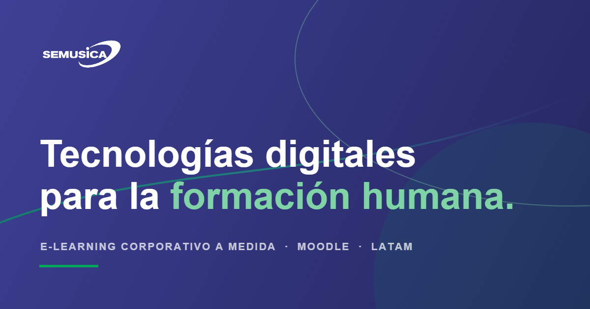

Tecnologías digitales para la formación humana
Sé Música diseña, implementa y acompaña soluciones digitales de aprendizaje para empresas, instituciones educativas y organizaciones culturales.
Desarrollamos aulas virtuales, cursos e-learning a medida, diseño instruccional, producción multimedia y experiencias formativas centradas en las personas.

14 años implementando aprendizaje
Pioneros en e-learning en Latinoamérica. Sé Música es una entidad pionera en soluciones de e-learning en Latinoamérica. Desde hace 14 años trascendemos el ámbito musical para brindar servicios de implementación digital a instituciones educativas y corporativas.
No surgimos de una fascinación técnica por digitalizar contenidos, sino de una pregunta pedagógica más profunda: cómo poner la tecnología al servicio de la persona, evitando que el aprendizaje digital se vuelva consumo pasivo, fragmentación de la atención o simple automatización corporativa.
Ayudamos a las organizaciones a formar equipos capaces de pensar, sentir, imaginar, decidir y actuar con conciencia en una época tecnológica. Conozca nuestra historia y enfoque.
Tres líneas de servicio
Cubrimos el ciclo completo de e-learning corporativo: desde la estrategia hasta la operación diaria de las plataformas. Puede contratarnos por servicio o como partner integral.
Consultoría y desarrollo de ecosistemas educativos digitales
Asesoría personalizada y horas de consultoría para crear o mejorar ecosistemas digitales — asegurando que su empresa esté a la vanguardia en capacitación. Ver servicio.
Virtualización de cursos empresariales
Transformamos sus programas en multimedia interactivo — guion, ilustración, locución y animación — empaquetado en SCORM. Dos niveles: estándar y avanzado/gamificado. Ver servicio.
Instalación, soporte y mantenimiento de aulas virtuales
Implementamos su aula virtual en la nube, personalizada con su identidad, con soporte técnico y actualizaciones que garantizan operatividad continua. Ver servicio.
Innovación que construimos sobre su aula — Sé Música Labs
Sé Música Labs es nuestra línea de desarrollo de innovación para el aula virtual: módulos propios que amplían lo que su plataforma puede hacer. No son plantillas — los construimos según la operación real de cada institución.
Módulo ERP de gestión de capacitaciones
Tableros de cumplimiento, asignación de itinerarios, control presupuestal y exportación — toda la gestión académica y operativa integrada en la propia aula virtual, sin saltar entre sistemas. Ver desarrollo.
Panel avanzado de perfil de usuario
Una vista enriquecida del progreso: competencias, insignias, itinerarios y avance por curso, para que cada persona entienda exactamente dónde está y qué sigue. Ver desarrollo.
Módulo de gestión de matrículas y pensiones
Matrículas, cobros y pensiones administrados dentro del aula virtual — sin plataformas externas ni conciliaciones manuales entre sistemas. Ver desarrollo.
El e-learning corporativo en Latinoamérica
La región vive una transformación acelerada en formación corporativa. La pregunta ya no es si virtualizar — es cómo hacerlo bien.
Docentes formados gratuitamente durante la pandemia
Cuando los escenarios cerraron, lanzamos 3 programas de Formación de Competencias Digitales para la Enseñanza Remota.
Confían en nosotros
Instituciones educativas y corporativas de toda Latinoamérica implementan su formación digital con nosotros — sin pausar su operación.
Minsur, Compañía Minera Raura, Unicon, SGS Academy, UPC, Instituto Profesional Projazz, Marcobre, Tottus, Layher, Escuela Moderna de Música y Danza, EMMAT Online y Universidad Nacional de Música.
Seis verticales, una metodología
Retail, Construcción, Minería, Servicios financieros, Salud e Industria.
No trabajamos solos
Nos rodeamos de aliados que suman conocimiento — neurociencia, ciberseguridad y el gremio que articula el e-learning en el Perú.
Institute Of NeuroCoaching
Estrategas en transformación organizacional y divulgadores de la neurociencia aplicada al management: diseño de soluciones que convierten el comportamiento humano en resultados de negocio.
Security Expert
Aliados en ciberseguridad, resiliencia y estrategia para entornos de formación digital seguros.
Asociación Peruana de e-Learning (APEL)
Miembros fundadores de la APEL, el gremio que articula el e-learning en el Perú.
¿Acaso existe algo más importante que ayudar a formar a un ser humano?
Una reunión de diagnóstico de 30 min. Sin venta, sin presión. Conversemos.